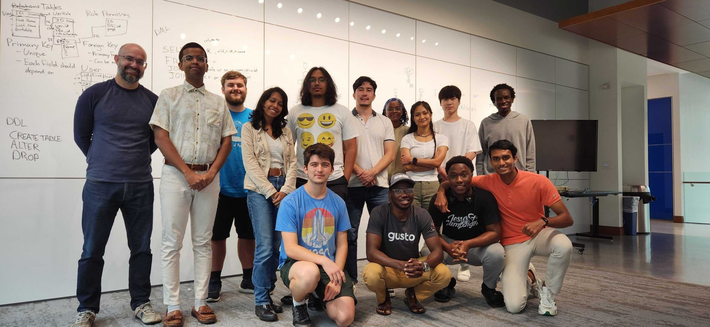

Internship Opportunity
Explore Internship Opportunity that would help you to enhance your education here in Berea.
Intership Opportunities at Berea College
This section contains the Internship offered on campus.
-
Student Software Developer
The Student Software Developer is an internship opportunity at Berea College. The team currently manages the website for Center For Excellence in Learning Through Service and maintains the Codebase. The team is currently led by Dr. Heggen,Brian Ramsey, and Karina.
-
Research Opportunities with Professors
Berea College offers a range of research opportunities with professors from Computer Science departments, providing students with valuable hands-on experience. Below is a highlight of one such opportunity:
Research Internship at Purdue University: This internship allows Berea College students to work at the Collaborative Research Lab at Purdue University, focusing on machine learning (ML) and artificial intelligence (AI) research. This opportunity provides students with practical research experience in cutting-edge fields alongside Purdue's faculty and researchers.
-
Explore More Opportunities
For additional research opportunities, please reach out to professors in the Computer Science Department. They can guide you toward projects that match your interests and goals.
- Github Link to the Simplify
- Find more opportunities at Handshake
- Internship Office Featured Internships
- Harvard Website for Freshman and Sophomore internships
- linkedin Job Board Offers a lot of internship and alerts too.
External Internship
We have compiled a list of resources for each group to make it easier for them to look for internship-opportunities.